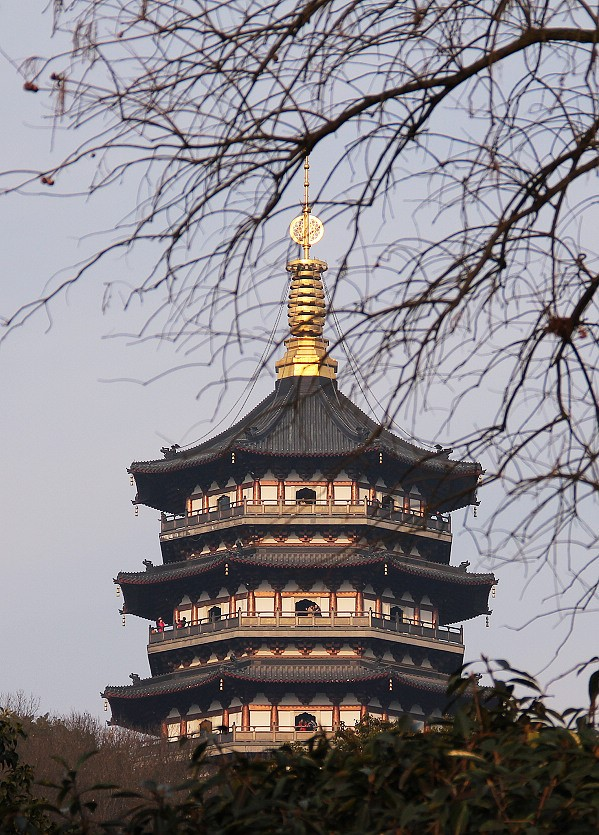

西湖
《饮湖上初晴后雨▪其二》苏轼
水光潋滟晴方好，山色空濛雨亦奇。
欲把西湖比西子，淡妆浓抹总相宜。
荫浓烟柳藏莺语，
香散风花逐马蹄。
断桥界于前后湖之中。水光滟潋，桥影倒浸，如玉腰金背。凡探梅孤山，蜡屐过此，辄值春雪未消。
三潭印月是西湖三岛中面积最大、景观是最为丰富的，同时知名度也是三者中的最高者。
旧时雷峰塔与北山的保俶塔，一南一北，隔湖相对，有“雷锋如老衲，保俶如美人”之誉，西湖上亦呈现出“一湖映双塔，南北向对峙”。
